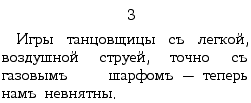
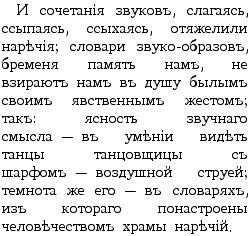
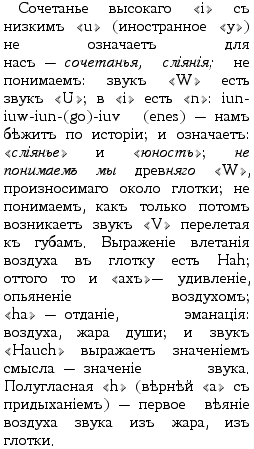
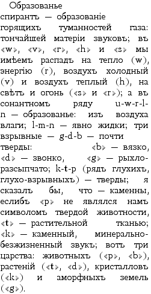

Glossolalia (Section 3)

The play of the dancer with the light, airy stream, as if with a gaseous veil is -- now incomprehensible to us.

And the combinations of sounds, composing, pouring out, shriveling up, weighed down the dialects; glossaries of sound-images, burdening our memory, no longer stare into our souls with their previous clear gesture; so: the clarity of a sound's meaning is -- in the mental ability to view the dances of the dancer with the veil -- as a stream of air; the darkness of sound meaning is -- in the glossaries, from which humanity has constructed the temples of dialects.

The combination of the high "i" with the low "u" (the foreign "u") does not signify for us -- combination, confluence, we do not comprehend that: the sound "W" is the sound "U", in "i" there is an "n": iun-iuw-iun-(go)-iuv (enes) -- runs to us throughout history; and signifies: "confluence" and "youthfulness" we do not comprehend the ancient "W", pronounced near the throat; we do not comprehend, how only then the sound "V" arises as it flies across to the lips. The expression of this flight of air into the throat (gullet) is Hah; from which there is "ah" -- wonderment, intoxication by the air; "ha" is -- giving forth, an emanation: of air, of the heat of the soul; and the sound "Hauch" expresses in the signification of the sense -- the signification of the sound. The semi-vowel "h" (rather "a" with aspiration) is -- the first wafting of the air of sound from the heat, out of the throat.

The formation of the spirants is -- the formation of burning mists of gas: of the very delicate matter of sounds; in "w," "v," "r," "h" and "s" we have a disintegration into warmth "w", energy (r), cold air (v) and warm air (h), into light and fire ("s" and "r"); in the sonant row u-w-r-l-n occurs -- the formation: of liquids from out of the air; l-m-n are -- distinctly liquidy; the three plosives -- g-d-b are -- almost firm: "b" is -- viscous, "d" is -- sonorous, "g" is -- porous-crumbly; k-t-p (a row of voiceless, unvoiced plosives) are -- firm; I might even say, they are -- rocky, if "p" were not for us a symbol of firm animality, "t" is -- plant thread; "k" is -- a rocky, mineral-lifeless sound; here are the three kingdoms: of animals ("p," "b"), of plants ("t," "d"), of crystals ("k") and of amorphous earths ("g").